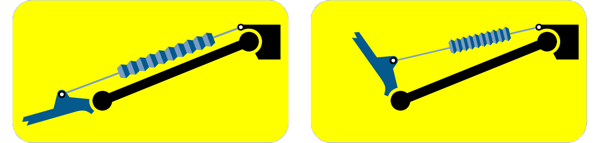
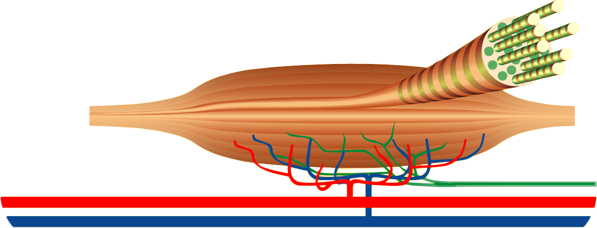

| HOMEPAGE | SISTEMI ED APPARATI | FASI DELLA VITA | ||
| HOMEPAGE | SISTEMI ED APPARATI | FASI DELLA VITA | ||
Mosculatura schelettrica
 La muscolatura scheletrica volontaria del nostro organismo è piuttosto complessa, in quanto i muscoli sono moltissimi, disposti a strati e con caratteristiche molto variabili. Contare i muscoli del nostro corpo non è un'impresa facile, per la difficoltà e la soggettività nello stabilire se un corpo muscolare è un singolo muscolo piuttosto che un fascio di un muscolo vicino. Nei testi scientifici il numero di muscoli varia tra 374 e 656.
I muscoli scheletrici presentano parti carnose rosse (parti contrattili), costituite in fasci separati tra loro da tessuto connettivo. Nei muscoli sono presenti delle lamine di tessuto connettivo: l'endomisio riveste ogni singola fibra (cellula) muscolare, il perimisio avvolge fasci di fibre e l'epimisio l'intero muscolo.
Alle estremità dei muscoli il connettivo forma dei cordoni di colore biancastro molto resistenti, i tendini, o delle lamine, le aponeurosi, che collegano i muscoli alle ossa.
Quasi tutti i nostri muscoli sono pari (uno a destra e uno a sinistra). Tra i pochi impari troviamo il diaframma, il muscolo che permette la respirazione.
In generale i muscoli si inseriscono sulle ossa tramite due capi: la testa (o capo di origine) e la coda (o capo terminale o capo di inserzione). La testa corrisponde all'estremità del muscolo che durante il movimento rimane perlopiù immobile, mentre la coda corrisponde al punto di attacco del muscolo sull'osso che viene spostato. La parte carnosa compresa tra i capi di origine e i capi terminali prende il nome di ventre del muscolo.
Muscoli agonisti ed antagonisti
Molti dei muscoli del nostro corpo lavorano in coppia: uno consente un movimento (agonista), l'altro il movimento contrario (antagonista).
Ad esempio, il bicipite brachiale determina con la sua contrazione la flessione dell'avambraccio, il tricipite brachiale, con un'azione antagonista rispetto al bicipite, ne determina invece l'estensione. Affinché sia possibile il movimento, quando gli agonisti si contraggono gli antagonisti devono rilasciarsi e viceversa.